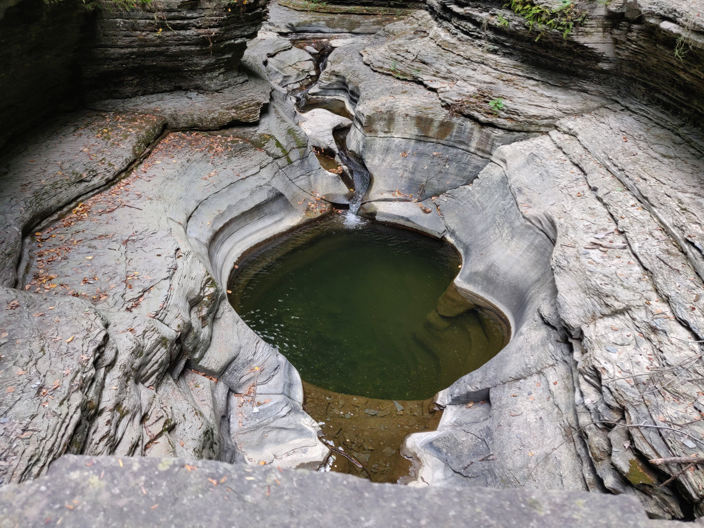
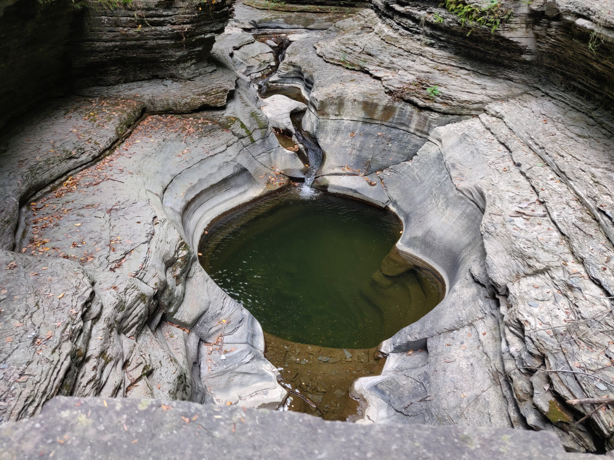

Scenic New York
Motivation
Often times when people hear the words "New York" they imagine the City, with its super-tall skyscrapers and concrete jungle. People picture the hustle and bustle of the big-apple, the five boroughs, and the Empire State Building. I love the city, and although it is great, there is more to the New York State than just the Big Apple. New York is big state with over 54,000 sq. miles of land area, and within its boundries there is natural beauty. This album seeks to highlight what I have seen of the state so far, and I hope that after viewing these photos you will be just as impressed with New York State as I am.
The Finger Lakes Region
The Finger Lakes Region is situated in western New York State and is famous for its hiking trails, wineries, waterfalls, and of course, the lakes for which it is named. There are a total of 11 lakes, and notable ones are Seneca Lake and Cayuga Lake, which are some of the deepest lakes in America. There are wine trails along many of the lakes with where wine tasting can be done.
Scenic Overlook in Ithaca, NY:

Country Road near Millport, NY
View of Cayuga Lake:
View of Seneca Lake:

Scenic views from Watkins Glen State Park:


 


Minnewaska State Park Preserve
The Minnewaska State Park Preserve lies in the Hudson Valley region of New York State, about 20 miles west of Poughkeepsie. Lake Minnewaska and Awosting Falls are among the popular sites at the park.

Upper Delaware Scenic Byway
The Upper Delaware Scenic Byway, or NY State Route 97, straddles the border of New York and Pennsylvania. The byway has stunning views of the Delaware River and the Appalachian Mountains. When I travel there, from New Jersey, I have to take state route 23 all the way through New Jersey and into Port Jervis, NY. From Port Jervis, you can folow signs for the Upper Delaware Scenic Byway.